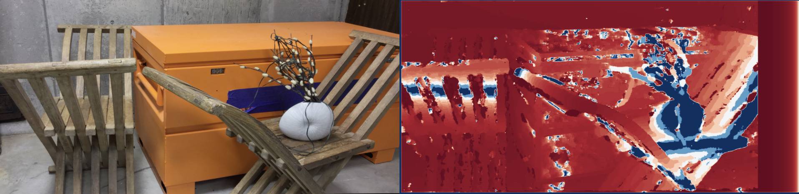

Structure from Motion (3D scene reconstruction)
Reconstructed a 3D scene and simultaneously obtained the camera poses of a monocular camera w.r.t. the given scene (multi-view geometry) by using traditional methods like Feature Matching and Outlier rejection using RANSAC, linear and non-linear triangulation, Perspective-n-Point and Bundle Adjustment in Python.
Estimated depth and pose from a sequence of images by using an unsupervised learning method - SFM learner.

Swapped faces in a video using traditional (Delaunay Triangulation and Thin Plate Spline) and deep learning
(Position Map Regression Network) methods

Estimated pixel-wise depth by comparing the information about a scene from 2 vantage points and examining
relative position of objects
Implemented OpenPose to detect multi-person 2D human poses in real-time and used the detected poses to control
the motion of a physical robot (built from scratch) using Jetson Nano and Arduino.
Estimated the camera calibration matrix (K) using Zhang’s calibration method with non-linear optimization.

Implemented an algorithm to detect and track a custom AR Tag, warped a custom image with inverse warping, and
placed a 3D cube on it without using OpenCV library inbuilt functions.
Analyzed a video taken by a vehicle front camera and developed an algorithm to recognize the road lanes, the lane
curvature and predict the turn.
Detected edges using probability of boundary detection algorithm by using DoG, Gabor, and LM filter banks.
Performed Image segmentation using K-Means clustering algorithm.